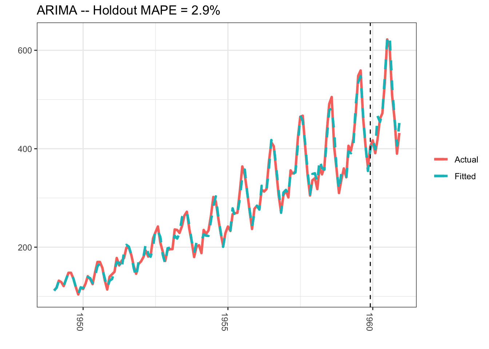
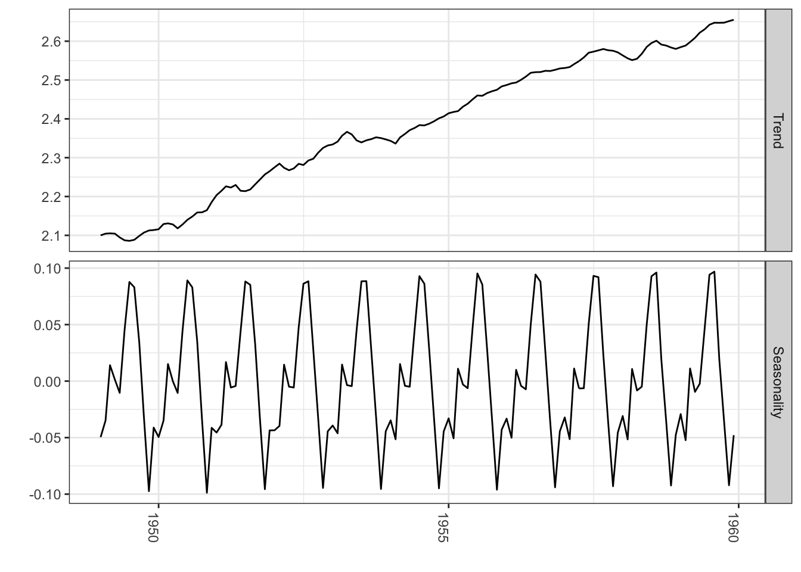
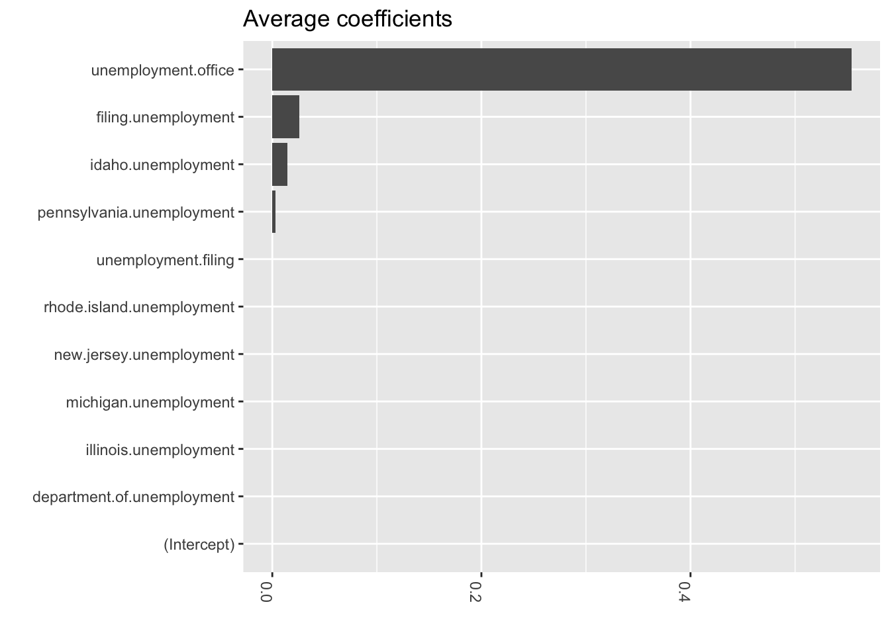
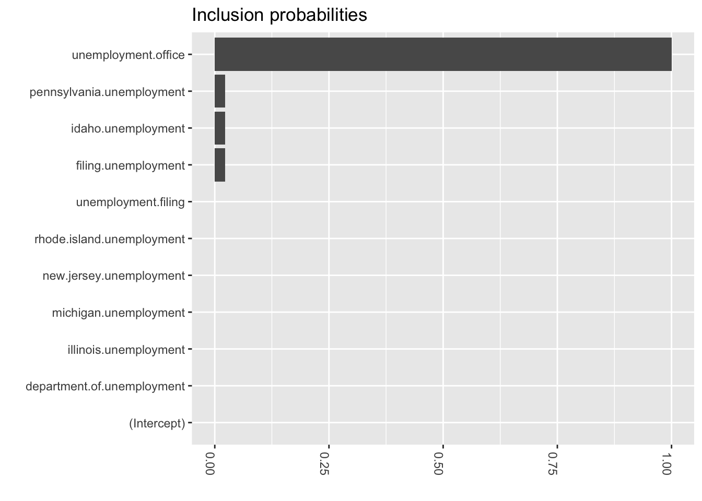
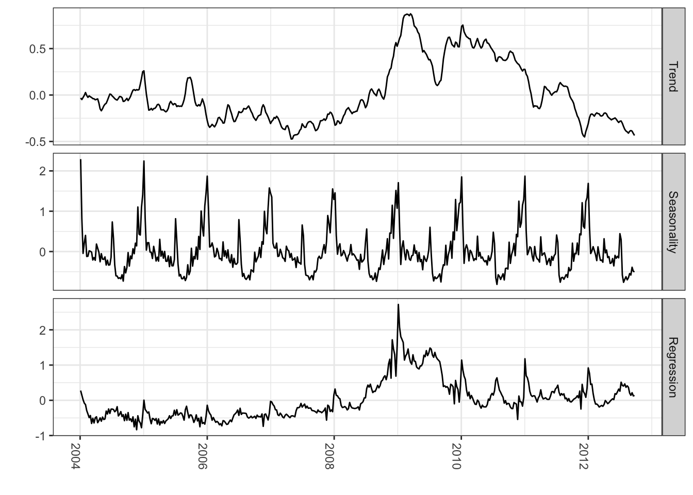
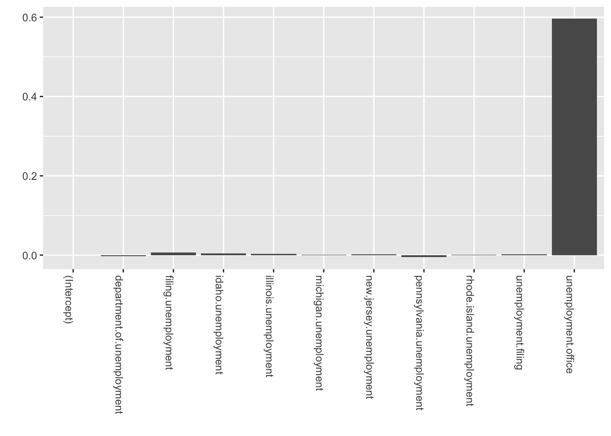

Bayesian methods are where we need to go. I have pretty strong opinions on this as Bayes provides a way to attune for our prior understanding of the world, move away from null hypothesis testing and take advantage of prior work. Additionally, hierarchical modeling provides a way to collectively pool strength when you have a smaller number of data points. All in all it is a great way to do analysis.
When working with time series analysis, the benefits of Bayesian methods are also great. Bayes provides a way to use an hierarchical modeling approach, and assign probabilities to the outcomes. This super direct way of using uncertainity makes it a nice foil to 95% confidence intervals.
I have take the examples from StichFix’s blog where they contrast the methods of ARIMA and Bayesian Structural Times Series Modeling.
Arima
Autoregressive integrated moving average modeling technique with differencing = 1, and moving average term of 1.
library(lubridate)library(bsts)library(dplyr)library(ggplot2)library(forecast)### Load the datadata("AirPassengers")Y <-window(AirPassengers, start=c(1949, 1), end=c(1959,12))### Fit the ARIMA modelarima <-arima(log10(Y), order=c(0, 1, 1), seasonal=list(order=c(0,1,1), period=12))### Actual versus predictedd1 <-data.frame(c(10^as.numeric(fitted(arima)), # fitted and predicted10^as.numeric(predict(arima, n.ahead =12)$pred)),as.numeric(AirPassengers), #actual valuesas.Date(time(AirPassengers)))names(d1) <-c("Fitted", "Actual", "Date")### MAPE (mean absolute percentage error)MAPE <-filter(d1, year(Date)>1959) %>%summarise(MAPE=mean(abs(Actual-Fitted)/Actual))### Plot actual versus predictedggplot(data=d1, aes(x=Date)) +geom_line(aes(y=Actual, colour ="Actual"), size=1.2) +geom_line(aes(y=Fitted, colour ="Fitted"), size=1.2, linetype=2) +theme_bw() +theme(legend.title =element_blank()) +ylab("") +xlab("") +geom_vline(xintercept=as.numeric(as.Date("1959-12-01")), linetype=2) +ggtitle(paste0("ARIMA -- Holdout MAPE = ", round(100*MAPE,2), "%")) +theme(axis.text.x=element_text(angle =-90, hjust =0))

Bayesian Structural Model
A different approach would be to use a Bayesian structural time series model with unobserved components. This technique is more transparent than ARIMA models and deals with uncertainty in a more elegant manner. It is more transparent because its representation does not rely on differencing, lags and moving averages. You can visually inspect the underlying components of the model. It handles uncertainty in a better way because you can quantify the posterior uncertainty of the individual components, control the variance of the components, and impose prior beliefs on the model. Last, but not least, any ARIMA model can be recast as a structural model.
The model form thus takes:
\[Y_t = \mu + x_t\beta+S_t + e_t\]
\[e_t \sim N(0,\sigma^2_e)\]
\[\mu_{t+1} = \mu_t + v_t\]
\[v_t \sim N(0, \sigma^2_v\]
Here xt denotes a set of regressors, St represents seasonality, and μt is the local level term. The local level term defines how the latent state evolves over time and is often referred to as the unobserved trend. This could, for example, represent an underlying growth in the brand value of a company or external factors that are hard to pinpoint, but it can also soak up short term fluctuations that should be controlled for with explicit terms. Note that the regressor coefficients, seasonality and trend are estimated simultaneously, which helps avoid strange coefficient estimates due to spurious relationships (similar in spirit to Granger causality, see 1). In addition, due to the Bayesian nature of the model, we can shrink the elements of β to promote sparsity or specify outside priors for the means in case we’re not able to get meaningful estimates from the historical data (more on this later).
library(lubridate)library(bsts)library(dplyr)library(ggplot2)### Load the datadata("AirPassengers")Y <-window(AirPassengers, start=c(1949, 1), end=c(1959,12))y <-log10(Y)### Run the bsts modelss <-AddLocalLinearTrend(list(), y)ss <-AddSeasonal(ss, y, nseasons =12)bsts.model <-bsts(y, state.specification = ss, niter =500, ping=0, seed=2016)### Get a suggested number of burn-insburn <-SuggestBurn(0.1, bsts.model)### Predictp <-predict.bsts(bsts.model, horizon =12, burn = burn, quantiles =c(.025, .975))### Actual versus predictedd2 <-data.frame(# fitted values and predictionsc(10^as.numeric(-colMeans(bsts.model$one.step.prediction.errors[-(1:burn),])+y), 10^as.numeric(p$mean)),# actual data and dates as.numeric(AirPassengers),as.Date(time(AirPassengers)))names(d2) <-c("Fitted", "Actual", "Date")### MAPE (mean absolute percentage error)MAPE <-filter(d2, year(Date)>1959) %>%summarise(MAPE=mean(abs(Actual-Fitted)/Actual))### 95% forecast credible intervalposterior.interval <-cbind.data.frame(10^as.numeric(p$interval[1,]),10^as.numeric(p$interval[2,]), subset(d2, year(Date)>1959)$Date)names(posterior.interval) <-c("LL", "UL", "Date")### Join intervals to the forecastd3 <-left_join(d2, posterior.interval, by="Date")
### Plot actual versus predicted with credible intervals for the holdout periodggplot(data=d3, aes(x=Date)) +geom_line(aes(y=Actual, colour ="Actual"), size=1.2) +geom_line(aes(y=Fitted, colour ="Fitted"), size=1.2, linetype=2) +theme_bw() +theme(legend.title =element_blank()) +ylab("") +xlab("") +geom_vline(xintercept=as.numeric(as.Date("1959-12-01")), linetype=2) +geom_ribbon(aes(ymin=LL, ymax=UL), fill="grey", alpha=0.5) +ggtitle(paste0("BSTS -- Holdout MAPE = ", round(100*MAPE,2), "%")) +theme(axis.text.x=element_text(angle =-90, hjust =0))
library(lubridate)library(bsts)library(ggplot2)library(reshape2)### Set up the modeldata("AirPassengers")Y <-window(AirPassengers, start=c(1949, 1), end=c(1959,12))y <-log10(Y)ss <-AddLocalLinearTrend(list(), y)ss <-AddSeasonal(ss, y, nseasons =12)bsts.model <-bsts(y, state.specification = ss, niter =500, ping=0, seed=2016)### Get a suggested number of burn-insburn <-SuggestBurn(0.1, bsts.model)### Extract the componentscomponents <-cbind.data.frame(colMeans(bsts.model$state.contributions[-(1:burn),"trend",]), colMeans(bsts.model$state.contributions[-(1:burn),"seasonal.12.1",]),as.Date(time(Y))) names(components) <-c("Trend", "Seasonality", "Date")components <-melt(components, id="Date")names(components) <-c("Date", "Component", "Value")### Plotggplot(data=components, aes(x=Date, y=Value)) +geom_line() +theme_bw() +theme(legend.title =element_blank()) +ylab("") +xlab("") +facet_grid(Component ~ ., scales="free") +guides(colour=FALSE) +theme(axis.text.x=element_text(angle =-90, hjust =0))

And of course use Bayes for variable selection using the spike and slab method (I was trained to call it stochastic variable selection…but whatever)
library(lubridate)library(bsts)library(ggplot2)library(reshape2)### Fit the model with regressorsdata(iclaims)ss <-AddLocalLinearTrend(list(), initial.claims$iclaimsNSA)ss <-AddSeasonal(ss, initial.claims$iclaimsNSA, nseasons =52)bsts.reg <-bsts(iclaimsNSA ~ ., state.specification = ss, data = initial.claims, niter =500, ping=0, seed=2016)### Get the number of burn-ins to discardburn <-SuggestBurn(0.1, bsts.reg)### Helper function to get the positive mean of a vectorPositiveMean <-function(b) { b <- b[abs(b) >0]if (length(b) >0) return(mean(b))return(0)}### Get the average coefficients when variables were selected (non-zero slopes)coeff <-data.frame(melt(apply(bsts.reg$coefficients[-(1:burn),], 2, PositiveMean)))coeff$Variable <-as.character(row.names(coeff))ggplot(data=coeff, aes(x=reorder(Variable,value), y=value)) +coord_flip()+geom_bar(stat="identity", position="identity") +theme(axis.text.x=element_text(angle =-90, hjust =0)) +xlab("") +ylab("") +ggtitle("Average coefficients")

### Inclusion probabilities -- i.e., how often were the variables selected inclusionprobs <-melt(colMeans(bsts.reg$coefficients[-(1:burn),] !=0))inclusionprobs$Variable <-as.character(row.names(inclusionprobs))ggplot(data=inclusionprobs, aes(x=reorder(Variable, value), y=value)) +geom_bar(stat="identity", position="identity") +theme(axis.text.x=element_text(angle =-90, hjust =0)) +coord_flip()+xlab("") +ylab("") +ggtitle("Inclusion probabilities")

library(lubridate)library(bsts)library(ggplot2)library(reshape2)### Fit the model with regressorsdata(iclaims)ss <-AddLocalLinearTrend(list(), initial.claims$iclaimsNSA)ss <-AddSeasonal(ss, initial.claims$iclaimsNSA, nseasons =52)bsts.reg <-bsts(iclaimsNSA ~ ., state.specification = ss, data = initial.claims, niter =500, ping=0, seed=2016)### Get the number of burn-ins to discardburn <-SuggestBurn(0.1, bsts.reg)### Get the componentscomponents.withreg <-cbind.data.frame(colMeans(bsts.reg$state.contributions[-(1:burn),"trend",]),colMeans(bsts.reg$state.contributions[-(1:burn),"seasonal.52.1",]),colMeans(bsts.reg$state.contributions[-(1:burn),"regression",]),as.Date(time(initial.claims))) names(components.withreg) <-c("Trend", "Seasonality", "Regression", "Date")components.withreg <-melt(components.withreg, id.vars="Date")names(components.withreg) <-c("Date", "Component", "Value")ggplot(data=components.withreg, aes(x=Date, y=Value)) +geom_line() +theme_bw() +theme(legend.title =element_blank()) +ylab("") +xlab("") +facet_grid(Component ~ ., scales="free") +guides(colour=FALSE) +theme(axis.text.x=element_text(angle =-90, hjust =0))

And of course adding priors
library(lubridate)library(bsts)library(ggplot2)library(reshape2)data(iclaims)prior.spikes <-c(0.1,0.1,0.1,0.1,0.1,0.1,0.1,0.1,0.1,1,0.1)prior.mean <-c(0,0,0,0,0,0,0,0,0,0.6,0)### Helper function to get the positive mean of a vectorPositiveMean <-function(b) { b <- b[abs(b) >0]if (length(b) >0) return(mean(b))return(0)}### Set up the priorsprior <-SpikeSlabPrior(x=model.matrix(iclaimsNSA ~ ., data=initial.claims), y=initial.claims$iclaimsNSA, prior.information.weight =200,prior.inclusion.probabilities = prior.spikes,optional.coefficient.estimate = prior.mean)### Run the bsts model with the specified priorsdata(iclaims)ss <-AddLocalLinearTrend(list(), initial.claims$iclaimsNSA)ss <-AddSeasonal(ss, initial.claims$iclaimsNSA, nseasons =52)bsts.reg.priors <-bsts(iclaimsNSA ~ ., state.specification = ss, data = initial.claims, niter =500, prior=prior, ping=0, seed=2016)### Get the average coefficients when variables were selected (non-zero slopes)coeff <-data.frame(melt(apply(bsts.reg.priors$coefficients[-(1:burn),], 2, PositiveMean)))coeff$Variable <-as.character(row.names(coeff))ggplot(data=coeff, aes(x=Variable, y=value)) +geom_bar(stat="identity", position="identity") +theme(axis.text.x=element_text(angle =-90, hjust =0)) +xlab("") +ylab("")

So with all of this said we can build Bayesian structural time series models easily, adding prior information, use variable selection and accurately indicate our uncertainity about future predictions. This is pretty powerful stuff. It is also why these techniques are used for anomaly detection and causal inference.
![]()